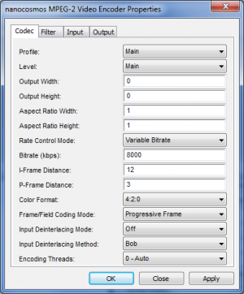

nanocosmos MPEG-2 Video Encoder Filter¶
DirectShow Filter / Module¶
nanocosmos MPEG-2 Video Encoder\ Module Name: nmpeg2enc.ax
DirectShow Connectivity¶
The input is accepting connections to video source, capture and decoder filters matching the following media types:
Major types: * MEDIATYPE_Video
Subtypes: * MEDIASUBTYPE_YV12, * MEDIASUBTYPE_I420, * MEDIASUBTYPE_YUY2, * MEDIASUBTYPE_UYVY, * MEDIASUBTYPE_HDYC, * MEDIASUBTYPE_RGB24, * MEDIASUBTYPE_RGB32, * MEDIASUBTYPE_ARGB32, * MEDIASUBTYPE_RGB565,
Formats: * FORMAT_VideoInfo * FORMAT_VideoInfo2
The output supports these media types:
Major types: * MEDIATYPE_Video
Subtypes: * MEDIASUBTYPE_MPEG2_VIDEO, * MEDIASUBTYPE_mpgv
Formats: * FORMAT_MPEG2_VIDEO, * FORMAT_NONE
Configuration¶
The encoding configuration may be set by using either the property page or the COM Interface INanoCodecOpts as declared in header file INanoCodecOpts.h .
// Filter GUID
// {2327A344-BECC-4f4f-89C6-DABDC5143832}
DEFINE_GUID(CLSID_NANO_MPEG2_ENCODER, 0x2327a344, 0xbecc, 0x4f4f, 0x89, 0xc6, 0xda, 0xbd, 0xc5, 0x14, 0x38, 0x32);
// Property Page GUID
// {8A84396A-277A-4835-9EB5-719863194DC9}
DEFINE_GUID(CLSID_NANO_MPEG2_ENCODER_PROPPAGE, 0x8a84396a, 0x277a, 0x4835, 0x9e, 0xb5, 0x71, 0x98, 0x63, 0x19, 0x4d, 0xc9);
// Configuration Interface GUID
// {698E0F57-B828-4c40-8867-095FF49F77D6}
DEFINE_GUID(IID_INanoCodecOpts, 0x698e0f57, 0xb828, 0x4c40, 0x88, 0x67, 0x9, 0x5f, 0xf4, 0x9f, 0x77, 0xd6);
// Configuration interface ICodecProp
// {0F817204-82C8-4c12-884A-F45FB2F33A6E}
DEFINE_GUID(IID_ICodecProp, 0xf817204, 0x82c8, 0x4c12, 0x88, 0x4a, 0xf4, 0x5f, 0xb2, 0xf3, 0x3a, 0x6e);
// ICodecProp: IID_nanoPeg_LicenseString
// type: BSTR / Unicode string
// Set license string to unlock filter
// {1788F0B0-5985-4a19-B7FE-8AAC1BFC14B3}
DEFINE_GUID(IID_nanoPeg_LicenseString, 0x1788f0b0, 0x5985, 0x4a19, 0xb7, 0xfe, 0x8a, 0xac, 0x1b, 0xfc, 0x14, 0xb3);
Setting the license to unlock filter¶
The filter can be unlocked either through a license key entry in the windows registry or by setting the license key through COM interface ICodecProp::SetProperty with the property IID_nanoPeg_LicenseString as first parameter. The second license parameter has to be a wide/unicode string!
Common Encoder Settings¶
| Parameter | Default values | Description |
|---|---|---|
| profile, level | Main Profile, Main Level | MPEG-2 Profile and Level |
| base_video.bitrate_kb | Profile and Level dependend | Video Bitrate in kBits/second |
| base_video.resolution.width | 0 - use input width | Picture Coding Width |
| base_video.resolution.height | 0 - use input height | Picture Coding Height |
| chroma_format_idc | 0 - I420, 1 - I422 | [0,1] Chroma Format |
| rate_method | 0 - CBR, 1 - VBR | [0,1] Rate Control Mode |
| distance_i | 12 | Intra Frame Distance / GOP len. |
| distance_p | 3 | P Frame Distance |
Configuration through INanoCodecOpts interface¶
- Version check by calling //GetCodecOptsVersion//// //(optional)
- Instanciating a parameter structure of type //MPDX4_MPEG2EncoderParams//
- Initializing the parameter struct by calling //InitCodecOptions// will set all parameters to default values for the selected profile and level
- Setting custom values for resolution and bitrate
- Applying settings by calling //SetCodecOptions//
Here a code snippet without error handling to show configuration for IMX 50 format:
#include "mpeg2_enc_params.h"
HRESULT hr = S_OK;
// Query INanoCodecOpts interface from IBaseFilter interface
// of MPEG-2 Encoder filter
CComQIPtr<INanoCodecOpts> pNanoCodecOpts = pBaseFilter;
MPDX4_MPEG2EncoderParams mpeg2EncParams;
memset(&mpeg2EncParams, 0, sizeof(MPDX4_MPEG2EncoderParams));
// Set desired profile and level values
mpeg2EncParams.profile = MPDX4_MPEG2_PROFILE_422IMX;
mpeg2EncParams.level = MPDX4_MPEG2_LEVEL_MAIN;
// Intialize the parameter struct according to profile and level set
hr = pNanoCodecOpts->InitCodecOptions((MPDX4_BaseCodecOpts*) &mpeg2EncParams, INANOCODECOPTS_VERSION);
// Set custom parameter values
// Bitrate
mpeg2EncParams.base_video.bitrate_kb = 50000; // IMX 50
// If resize is needed
mpeg2EncParams.base_video.resolution.width = 720;
mpeg2EncParams.base_video.resolution.height = 608;
// Apply settings and finish configuration
hr = pNanoCodecOpts->SetCodecOptions((MPDX4_BaseCodecOpts*) &mpeg2EncParams, INANOCODECOPTS_VERSION);
Configuration through DirectShow filter property page¶
The filter’s property page offers a subset of encoding parameters, containing the most important options.

Debug-Log Configuration Registry Settings¶
Key: HKEY_CURRENT_USER\Software\DebugNano\nmpeg2enc.ax
File name¶
Sets the output file name. The folder must already exist. * Value name: LogToFile * Value type: REG_SZ / String * Valid values: a valid output file name to enable file logging or an empty string
Logging level¶
A higher value increases the amount of logging messages sent, and messages get more detailed. * Value name: TRACE * Value type: REG_DWORD * Valid values: * 0 - minimal logging * … * 9 - maximal logging